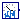
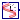
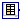

Auxiliary custom components developed for simulation and linearization purposes.
Extends from Modelica.Icons.VariantsPackage (Icon for package containing variants).
| Name | Description |
|---|---|
|  TimedNoiseInjection | Model to inject noise on specified time points. |
|  TimedInputInjection | Model to inject a designed signal on specified time points. |
|  InputData | |
| DeMultiplex7 | DeMultiplexer block for 7 output connectors |
| EventTriggerSnapshot | Trigger snapshot saving at specific points of the simulation |
| TestCustomComponents | Package with test models for custom components |
Model to inject noise on specified time points.
Extends from Modelica.Blocks.Interfaces.SO (Single Output continuous control block).
| Name | Description |
|---|---|
| y | Connector of Real output signal |
Model to inject a designed signal on specified time points.
Extends from Modelica.Blocks.Interfaces.SO (Single Output continuous control block).
| Name | Description |
|---|---|
| y | Connector of Real output signal |
Extends from Modelica.Blocks.Interfaces.MO (Multiple Output continuous control block).
| Name | Description |
|---|---|
| nout | Number of outputs |
| Name | Description |
|---|---|
| y[nout] | Connector of Real output signals |
DeMultiplexer block for 7 output connectors
The input connector is split into seven output connectors. Note, that the dimensions of the output connector signals have to be explicitly defined via parameters n1, n2, n3, n4, n5, n6 and n7.
Extends from Modelica.Blocks.Icons.Block (Basic graphical layout of input/output block).
| Name | Description |
|---|---|
| n1 | Dimension of output signal connector 1 |
| n2 | Dimension of output signal connector 2 |
| n3 | Dimension of output signal connector 3 |
| n4 | Dimension of output signal connector 4 |
| n5 | Dimension of output signal connector 5 |
| n6 | Dimension of output signal connector 6 |
| n7 | Dimension of output signal connector 7 |
| Name | Description |
|---|---|
| u[n1 + n2 + n3 + n4 + n5 + n6 + n7] | Connector of Real input signals |
| y1[n1] | Connector of Real output signals 1 |
| y2[n2] | Connector of Real output signals 2 |
| y3[n3] | Connector of Real output signals 3 |
| y4[n4] | Connector of Real output signals 4 |
| y5[n5] | Connector of Real output signals 5 |
| y6[n6] | Connector of Real output signals 6 |
| y7[n7] | Connector of Real output signals 7 |
Trigger snapshot saving at specific points of the simulation
| Name | Description |
|---|---|
| tsnap1 | [s] |
| tsnap2 | [s] |